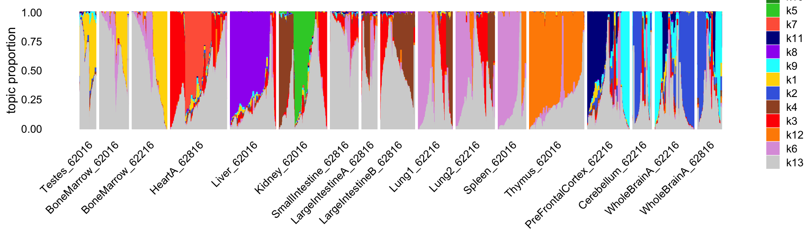
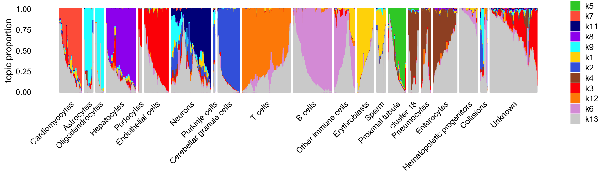

Last updated: 2022-08-02
Checks: 7 0
Knit directory: scATACseq-topics/
This reproducible R Markdown analysis was created with workflowr (version 1.7.0). The Checks tab describes the reproducibility checks that were applied when the results were created. The Past versions tab lists the development history.
Great! Since the R Markdown file has been committed to the Git repository, you know the exact version of the code that produced these results.
Great job! The global environment was empty. Objects defined in the global environment can affect the analysis in your R Markdown file in unknown ways. For reproduciblity it’s best to always run the code in an empty environment.
The command set.seed(20200729) was run prior to running
the code in the R Markdown file. Setting a seed ensures that any results
that rely on randomness, e.g. subsampling or permutations, are
reproducible.
Great job! Recording the operating system, R version, and package versions is critical for reproducibility.
Nice! There were no cached chunks for this analysis, so you can be confident that you successfully produced the results during this run.
Great job! Using relative paths to the files within your workflowr project makes it easier to run your code on other machines.
Great! You are using Git for version control. Tracking code development and connecting the code version to the results is critical for reproducibility.
The results in this page were generated with repository version b2af835. See the Past versions tab to see a history of the changes made to the R Markdown and HTML files.
Note that you need to be careful to ensure that all relevant files for
the analysis have been committed to Git prior to generating the results
(you can use wflow_publish or
wflow_git_commit). workflowr only checks the R Markdown
file, but you know if there are other scripts or data files that it
depends on. Below is the status of the Git repository when the results
were generated:
Ignored files:
Ignored: .DS_Store
Ignored: data/.DS_Store
Ignored: data/Buenrostro_2018/
Ignored: output/Buenrostro_2018/binarized/filtered_peaks/de-buenrostro2018-k=10-noshrink.RData
Ignored: output/Buenrostro_2018/binarized/filtered_peaks/fit-Buenrostro2018-binarized-filtered-scd-ex-k=10.rds
Ignored: output/Buenrostro_2018/binarized/filtered_peaks/fit-Buenrostro2018-binarized-filtered-scd-ex-k=8.rds
Ignored: output/Cusanovich_2018/
Untracked files:
Untracked: analysis/fit-Buenrostro2018-binarized-scd-ex-k=10.rds
Untracked: data/Buenrostro_2018_binarized.RData
Untracked: output/Buenrostro_2018/binarized/filtered_peaks/Buenrostro_2018_binarized_filtered.RData
Untracked: plots/
Untracked: scripts/fit-buenrostro-2018-k=8.rds
Note that any generated files, e.g. HTML, png, CSS, etc., are not included in this status report because it is ok for generated content to have uncommitted changes.
These are the previous versions of the repository in which changes were
made to the R Markdown (analysis/cusanovich2018_k13.Rmd)
and HTML (docs/cusanovich2018_k13.html) files. If you’ve
configured a remote Git repository (see ?wflow_git_remote),
click on the hyperlinks in the table below to view the files as they
were in that past version.
| File | Version | Author | Date | Message |
|---|---|---|---|---|
| Rmd | b2af835 | Peter Carbonetto | 2022-08-02 | workflowr::wflow_publish("analysis/cusanovich2018_k13.Rmd", verbose = TRUE) |
| html | ffcfe12 | Peter Carbonetto | 2022-08-02 | Added notes to cusanovich2018_k13 analysis. |
| Rmd | d6d1bd1 | Peter Carbonetto | 2022-08-02 | workflowr::wflow_publish("analysis/cusanovich2018_k13.Rmd", verbose = TRUE) |
| html | cc5335a | Peter Carbonetto | 2022-08-02 | Revised the second structure plot. |
| Rmd | 0f830ba | Peter Carbonetto | 2022-08-02 | workflowr::wflow_publish("analysis/cusanovich2018_k13.Rmd", verbose = TRUE) |
| html | 9eff66b | Peter Carbonetto | 2022-08-01 | Added a second structure plot to the cusanovich2018_k13 analysis. |
| Rmd | 9e501cb | Peter Carbonetto | 2022-08-01 | workflowr::wflow_publish("analysis/cusanovich2018_k13.Rmd") |
| html | 05361f0 | Peter Carbonetto | 2022-08-01 | Made a couple small adjustments to the structure plot in the |
| Rmd | 37f3aeb | Peter Carbonetto | 2022-08-01 | workflowr::wflow_publish("analysis/cusanovich2018_k13.Rmd", verbose = TRUE) |
| html | 44d4987 | Peter Carbonetto | 2022-08-01 | Improved the structure plot in the cusanovich2018_k13 analysis. |
| Rmd | f62a0d1 | Peter Carbonetto | 2022-08-01 | workflowr::wflow_publish("analysis/cusanovich2018_k13.Rmd", verbose = TRUE) |
| html | 643af50 | Peter Carbonetto | 2022-08-01 | Build site. |
| Rmd | db1e9f0 | Peter Carbonetto | 2022-08-01 | workflowr::wflow_publish("analysis/cusanovich2018_k13.Rmd", verbose = TRUE) |
| html | 52d4663 | Peter Carbonetto | 2022-08-01 | First build of cusanovich2018_k13 analysis. |
| Rmd | cf89aa8 | Peter Carbonetto | 2022-08-01 | workflowr::wflow_publish("analysis/cusanovich2018_k13.Rmd", verbose = TRUE) |
Add text here summarizing the analysis.
Load the packages used in the analysis below.
library(Matrix)
library(fastTopics)
library(ggplot2)Load the sample meta-data:
tissues <-
c("BoneMarrow_62016","BoneMarrow_62216",
"HeartA_62816","Kidney_62016","Testes_62016","SmallIntestine_62816",
"LargeIntestineA_62816",
"LargeIntestineB_62816","Liver_62016",
"Lung1_62216","Lung2_62216",
"Spleen_62016",
"Thymus_62016","PreFrontalCortex_62216",
"Cerebellum_62216","WholeBrainA_62216","WholeBrainA_62816")
load("data/Cusanovich_2018/processed_data/Cusanovich_2018_metadata_only.RData")
samples <- transform(samples,
tissue.replicate = factor(tissue.replicate,tissues))Next load the \(k = 13\) multinomial topic model fit:
fit <- readRDS("output/Cusanovich_2018/fit-Cusanovich2018-scd-ex-k=13.rds")$fitThis Structure plot shows the cells arranged by tissue. Note that replicates were collected for four of the tissues (bone marrow, lung, small intestine, whole brain) in a second mouse.
set.seed(1)
topic_colors <- c("gold","royalblue","red","sienna","limegreen",
"plum","tomato","purple","cyan","forestgreen",
"darkblue","darkorange","lightgray")
topics <- c(1,2,5,6,9,11,4,10,8,3,7,12,13)
p1 <- structure_plot(fit,grouping = samples$tissue.replicate,gap = 30,n = 4000,
perplexity = 30,colors = topic_colors,topics = topics,
verbose = FALSE)
print(p1)
Reassuringly, the replicates show a very similar distribution of topics. Also reassuringly, some tissues are clearly distinguished by the topics (e.g., thymus), and similar tissues (e.g., small and large intenstine) share topics.
In this next Structure plot, we arrange the cells by the “major clusters” identified by Cusanovich et al (they used the Louvain community detection algorithm implemented in Seurat to identify these clusters).
cell_types <-
c("Cardiomyocytes",
"Astrocytes",
"Oligodendrocytes",
"Hepatocytes",
"Podocytes",
"Endothelial cells",
"Neurons",
"Purkinje cells",
"Cerebellar granule cells",
"T cells",
"B cells",
"Other immune cells",
"Proximal tubule",
"cluster 18",
"Pneumocytes",
"Enterocytes",
"Erythroblasts",
"Sperm",
"Hematopoietic progenitors",
"Collisions",
"Unknown")
x <- samples$cell_label
x[x == "Activated B cells"] <- "B cells"
x[x == "Immature B cells"] <- "B cells"
x[x == "Ex. neurons CPN"] <- "Neurons"
x[x == "Ex. neurons SCPN"] <- "Neurons"
x[x == "Ex. neurons CThPN"] <- "Neurons"
x[x == "SOM+ Interneurons"] <- "Neurons"
x[x == "Inhibitory neurons"] <- "Neurons"
x[x == "Regulatory T cells"] <- "T cells"
x[x == "Endothelial I cells"] <- "Endothelial cells"
x[x == "Endothelial II cells"] <- "Endothelial cells"
x[x == "Endothelial I (glomerular)"] <- "Endothelial cells"
x[x == "Proximal tubule S3"] <- "Proximal tubule"
x[x == "Type I pneumocytes"] <- "Pneumocytes"
x[x == "Type II pneumocytes"] <- "Pneumocytes"
x[x == "Alveolar macrophages"] <- "Macrophages"
x[x == "Loop of henle"] <- "cluster 18"
x[x == "Distal convoluted tubule"] <- "cluster 18"
x[x == "Collecting duct"] <- "cluster 18"
x[x == "DCT/CD"] <- "cluster 18"
x[x == "Monocytes"] <- "Other immune cells"
x[x == "Dendritic cells"] <- "Other immune cells"
x[x == "Macrophages"] <- "Other immune cells"
x[x == "Microglia"] <- "Other immune cells"
x[x == "NK cells"] <- "Other immune cells"
samples <- transform(samples,
cell_label = factor(x,cell_types))
set.seed(1)
p2 <- structure_plot(fit,grouping = samples$cell_label,gap = 30,n = 4000,
perplexity = 30,colors = topic_colors,verbose = FALSE)
print(p2)
Clearly, the topics capture much of the high-level structure identified by the community detection algorithm.
sessionInfo()
# R version 3.6.2 (2019-12-12)
# Platform: x86_64-apple-darwin15.6.0 (64-bit)
# Running under: macOS Catalina 10.15.7
#
# Matrix products: default
# BLAS: /Library/Frameworks/R.framework/Versions/3.6/Resources/lib/libRblas.0.dylib
# LAPACK: /Library/Frameworks/R.framework/Versions/3.6/Resources/lib/libRlapack.dylib
#
# locale:
# [1] en_US.UTF-8/en_US.UTF-8/en_US.UTF-8/C/en_US.UTF-8/en_US.UTF-8
#
# attached base packages:
# [1] stats graphics grDevices utils datasets methods base
#
# other attached packages:
# [1] ggplot2_3.3.6 fastTopics_0.6-131 Matrix_1.2-18 workflowr_1.7.0
#
# loaded via a namespace (and not attached):
# [1] mcmc_0.9-6 fs_1.5.2 progress_1.2.2 httr_1.4.2
# [5] rprojroot_1.3-2 tools_3.6.2 backports_1.1.5 bslib_0.3.1
# [9] utf8_1.1.4 R6_2.4.1 irlba_2.3.3 uwot_0.1.10
# [13] DBI_1.1.0 lazyeval_0.2.2 colorspace_1.4-1 withr_2.5.0
# [17] tidyselect_1.1.1 prettyunits_1.1.1 processx_3.5.2 compiler_3.6.2
# [21] git2r_0.29.0 quantreg_5.54 SparseM_1.78 plotly_4.9.2
# [25] labeling_0.3 sass_0.4.0 scales_1.1.0 SQUAREM_2017.10-1
# [29] quadprog_1.5-8 callr_3.7.0 pbapply_1.5-1 mixsqp_0.3-46
# [33] systemfonts_1.0.2 stringr_1.4.0 digest_0.6.23 rmarkdown_2.11
# [37] MCMCpack_1.4-5 pkgconfig_2.0.3 htmltools_0.5.2 fastmap_1.1.0
# [41] invgamma_1.1 highr_0.8 htmlwidgets_1.5.1 rlang_0.4.11
# [45] rstudioapi_0.13 jquerylib_0.1.4 generics_0.0.2 farver_2.0.1
# [49] jsonlite_1.7.2 dplyr_1.0.7 magrittr_2.0.1 Rcpp_1.0.8
# [53] munsell_0.5.0 fansi_0.4.0 lifecycle_1.0.0 stringi_1.4.3
# [57] whisker_0.4 yaml_2.2.0 MASS_7.3-51.4 Rtsne_0.15
# [61] grid_3.6.2 parallel_3.6.2 promises_1.1.0 ggrepel_0.9.1
# [65] crayon_1.4.1 lattice_0.20-38 cowplot_1.1.1 hms_1.1.0
# [69] knitr_1.37 ps_1.6.0 pillar_1.6.2 glue_1.4.2
# [73] evaluate_0.14 getPass_0.2-2 data.table_1.12.8 RcppParallel_5.1.5
# [77] vctrs_0.3.8 httpuv_1.5.2 MatrixModels_0.4-1 gtable_0.3.0
# [81] purrr_0.3.4 tidyr_1.1.3 assertthat_0.2.1 ashr_2.2-54
# [85] xfun_0.29 coda_0.19-3 later_1.0.0 ragg_0.3.1
# [89] viridisLite_0.3.0 truncnorm_1.0-8 tibble_3.1.3 ellipsis_0.3.2